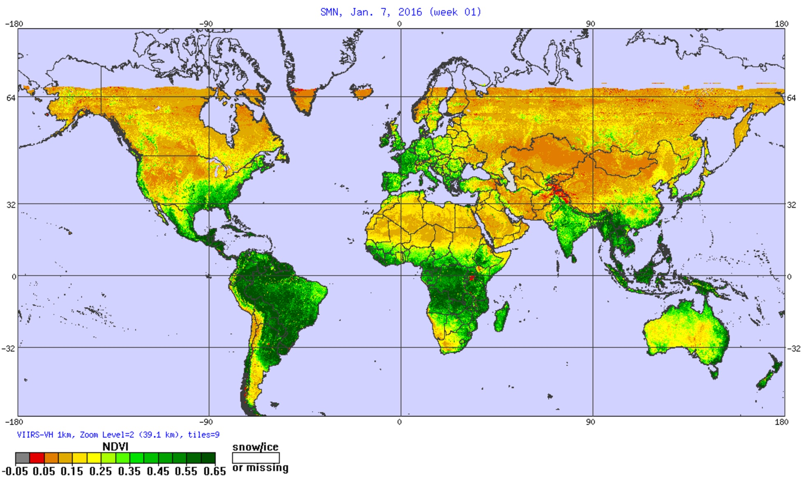

After reading the quarterly magazine that I get for being a ... to the Dutch branche of the World Wildlife Fund (WWF) I suddenly wanted to make a visualization that related somehow to something that the WWF might do. I "pitched" the idea to Shirley and it was some back and forth on what more general topic would work for both of us. But then Shirley found her angle, the data visalization survey that had just come out, which gave us our topic of "community".
At the start of April I asked twitter for help on datasets that one might associate with the WWF and got a whole lot of links (thank you very much dear followers!). However, due to being in the US the entire month doing conferences & meetups, and creating the presentation that Shirley and I had to make for OpenVisConf in Boston on April 24th (which was another amazing conference!), I didn't get to do anything with the links until I was waiting at the gate of my flight back home to Amsterdam on April 26th.
I received a lot of tracking data links, either animal or ... in the water. But what I noticed was that the search functionalities of these data repositories is rather aimed at researchers. I could search datasets based on the id of a paper or name of a scientist. But I couldn't request all tracking data of, say, whales...
Another type of dataset that was very prevalent were the choropleths, filled regions on a map, representing things such as protected areas, or animal habitations zones.
I just started to meander through the links, and I don't know how I got there, but at some point I found myself on the website of NOAA STAR, the Center for satellite applications and research. Again, just clicking around, and then I came across an image of the Earth, colored by vegetation health. 
{kind=link}